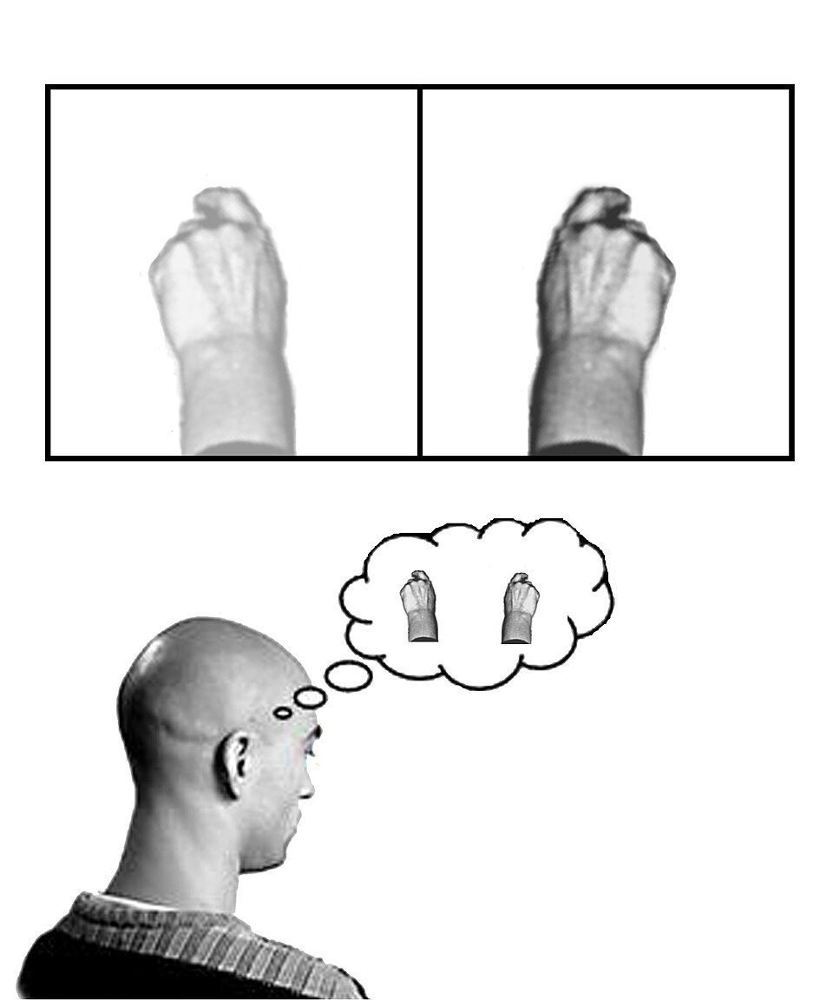
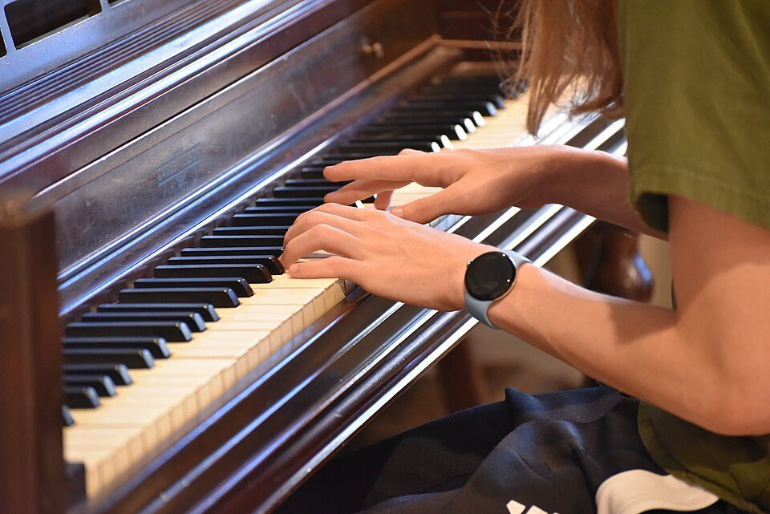

Un cerebro que cambia
La plasticidad cerebral (o neuroplasticidad) es la capacidad del sistema nervioso para modificar su estructura y su funcionamiento en respuesta a la experiencia, el aprendizaje o una lesión. Ya Cajal intuyó que el ejercicio mental podía reforzar las conexiones entre neuronas.


Cómo se produce
- Sináptica: las sinapsis que se usan juntas se refuerzan («las neuronas que se disparan juntas, se conectan juntas», según la idea de Donald Hebb, 1949) y las que no se usan se debilitan y se eliminan.
- Estructural: aparecen y desaparecen espinas dendríticas; crecen o se podan ramificaciones; cambia la mielina.
- De mapas: las áreas de la corteza pueden ampliar o ceder territorio. Por ejemplo, la zona de la mano izquierda es mayor en violinistas y, en personas ciegas, la corteza visual se usa para leer braille.
Periodos críticos
La plasticidad es máxima en la infancia: hay periodos en los que ciertas capacidades, como la visión binocular o los sonidos de un idioma, se desarrollan de forma óptima si reciben estímulos. Por eso es importante detectar y tratar pronto el ojo vago o la sordera infantil.
En la edad adulta
El cerebro adulto sigue siendo plástico, aunque menos. Aprender un idioma, un instrumento o una habilidad nueva produce cambios medibles. Esta capacidad explica:
- La recuperación tras un ictus o un traumatismo con neurorrehabilitación, más eficaz cuanto antes empieza y más intensa es.
- La reserva cognitiva: las personas con más formación y actividad mental toleran mejor las lesiones cerebrales.
También tiene un lado negativo
La plasticidad puede consolidar problemas: el dolor crónico, los acúfenos o las adicciones implican cambios plásticos en los circuitos del cerebro.
Fuentes
- Pascual-Leone A, et al. The plastic human brain cortex. Annu Rev Neurosci. 2005;28:377-401. doi:10.1146/annurev.neuro.27.070203.144216.
- Hebb DO. The Organization of Behavior. Nueva York: Wiley; 1949.